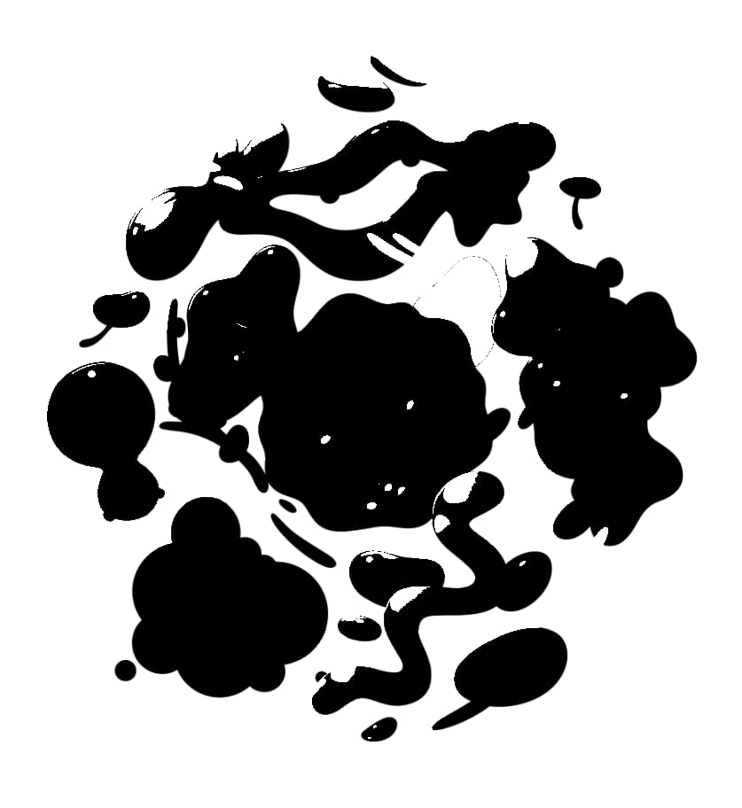

Threshold adjustment
Create a two-tone, black and white image from grayscale or color images based on a pixel intensity threshold.


Create a two-tone, black and white image from grayscale or color images based on a pixel intensity threshold.
Any pixels lighter than the threshold are converted to white; any pixels darker than the threshold are converted to black.
The following settings can be adjusted in the dialog: